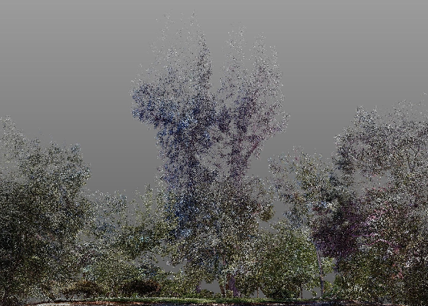
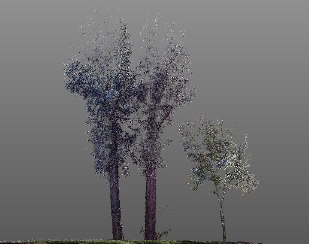
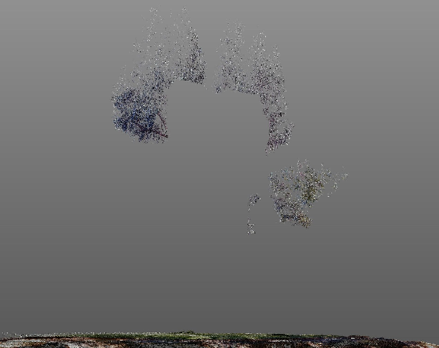
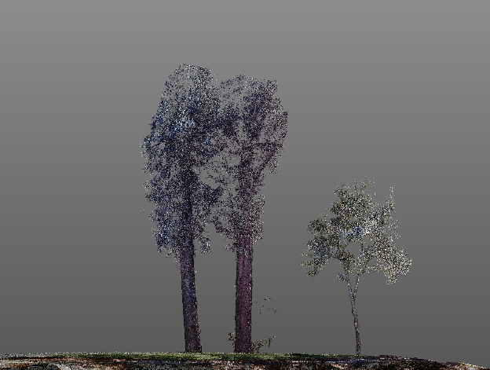
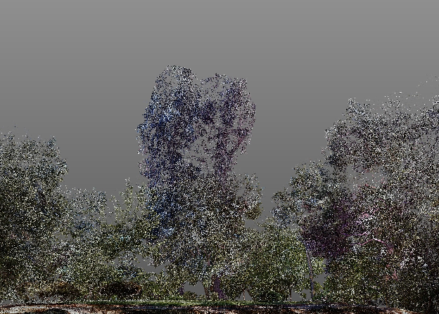

Scanning landscapes yields surprising benefits beyond topo and tree locations: measure height and canopy, analyze volume and lean, and preview pruning before anyone climbs a ladder.
Clients often want detailed topographic maps and the precise location of trees, walls, paths, and other landscape elements, but LiDAR mapping collects a wealth of information that can be used for other purposes. The collected data can be used to measure tree height and canopy width, and analysis of tree volumes and angles can help predict where a tree might fall.
For a recent project we were asked to help justify and then plan pruning of 100-foot eucalyptus trees near Berkeley, CA.

Eucalyptus trees are massive, invasive trees that are full of oil and so are a serious concern in fire. They also shed bark and leaves that harm the fertility of the soil beneath them. The two trees that we scanned were nearly 180 feet tall before the owner pruned them two years earlier, but they regain five to ten feet every year. We used an existing scan of the building with a quick (one hour) re-scan of the eucalyptus trees to evaluate the angle of the trees, their height, and the distance from the house and the deck. The client decided to skip removing the trees entirely (for now) due to the high cost to prune them to make sure they would be safe for another two to three years.

While we were there she asked us to look at another tree, an established oak that was growing at an angle to reach more light. She was interested in digitally pruning the trees to decide which branches to cut and to visualize how the yard would look afterward.

This image shows the view from the back deck, including the oak in the foreground and the eucalyptus in the background. We isolated the trees to get a clear view of which branches might be trimmed.
We then removed the branches digitally and looked at the trees from every angle to make sure that we created a balanced shape.


Eucalyptus trees are tricky because they are so massive, and have so few branches, that they look a little like totem poles after pruning. Fortunately, they fill back in very quickly.

We then put the trees back in the scene to see how they looked. This entire process took less than four hours. The owner cares deeply about the look and the health of the plantings and was happy to have the opportunity to see how the results would look before committing to changes that might have a significant impact on the property.